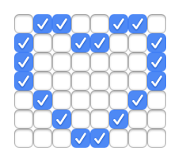

Checkboxland
Render anything as HTML checkboxes
Demos
Overview
Checkboxland is a JavaScript library for rendering anything as HTML checkboxes.
You can use it to display animations, text, and arbitrary data. It also supports plugins, so you can build more powerful APIs on top of it.
Checkboxland is dependency-free, framework-agnostic, and fun! 🙃
Why does this even exist? Here's some background.Limitations
Having lots of elements on a webpage can impact runtime performance. Checkboxes are no exception. Checkboxland attempts to mitigate some of these issues, but you'll likely run into performance issues if you are displaying large grids (1500+ checkboxes), and trying to update them rapidly.
For best results, stay below 1500 checkboxes. Some good sizes in this range include 32x32, 48x24, and 64x16.
Setup
Install this package via npm:
npm install checkboxlandImport it into your application, and create a checkbox grid:
import { Checkboxland } from 'checkboxland';
// Create a 16x16 checkbox grid inside `#my-container`
const cbl = new Checkboxland({
dimensions: '16x16',
selector: '#my-container'
});If no options are provided, the following defaults will be used:
dimensions:'8x8'selector:'#checkboxland'fillValue:0(meaning, all boxes are unchecked)
Note: if you really want to load it with a <script> tag, consider using an inline es6 module, as shown below:
<script type="module">
import { Checkboxland } from 'https://unpkg.com/checkboxland?module';
window.Checkboxland = Checkboxland;
</script>An Example
Let's display a heart on a checkbox grid:
import { Checkboxland } from 'checkboxland';
const cbl = new Checkboxland({ dimensions: '8x7' });
// Create a data representation of the heart.
const heart = [
[0,1,1,0,0,1,1,0],
[1,0,0,1,1,0,0,1],
[1,0,0,0,0,0,0,1],
[1,0,0,0,0,0,0,1],
[0,1,0,0,0,0,1,0],
[0,0,1,0,0,1,0,0],
[0,0,0,1,1,0,0,0],
];
// This updates the grid with the data we provided.
cbl.setData(heart);
So what happened?
We created a JavaScript matrix (an array of arrays) to represent the grid. Each location in the matrix represents a checkbox, where:
- 0 = (unchecked)
- 1 = (checked)
- 2 = (indeterminate)
By passing this matrix to our setData() method, we update the checkbox grid on the page.
For more ways to interact with the checkbox grid, see the API methods below.
Low-level API
The low-level API lets you update the checkbox grid with raw data.
getCheckboxValue
Gets the value of a single checkbox in the checkbox grid.
Requires an (x,y) coordinate to identify the checkbox location.
Note: the top-left corner of the grid represents the origin (0,0).
.getCheckboxValue(x, y)Arguments
x(number): The x-coordinate of the checkbox you are targeting.y(number): The y-coordinate of the checkbox you are targeting.
Returns
(number): Returns a 0, 1, or 2 (where 0 represents "unchecked", 1 represents "checked", and 2 represents "indeterminate").
setCheckboxValue
Sets the value of a single checkbox in the checkbox grid.
Requires an (x, y) coordinate to identify the checkbox location.
Note: the top-left corner of the grid represents the origin (0,0).
.setCheckboxValue(x, y, newValue)Arguments
x(number): The x-coordinate of the checkbox you are targeting.y(number): The y-coordinate of the checkbox you are targeting.newValue(number): The value of the checkbox you are setting. Must be 0, 1, or 2 (0 represents "unchecked", 1 represents "checked", and 2 represents "indeterminate").
Returns
Nothing
getData
Get a data matrix representing the current state of the checkbox grid.
.getData()Arguments
None
Returns
(array): A matrix (array of arrays), representing the full state of the checkbox grid.
setData
Sets the values in the checkbox grid to those in the provided matrix.
By default, the matrix will overwrite the existing data in the grid, starting at the top-left corner. Options exist for more targeted data setting.
.setData(data, [options])Arguments
data(array): A matrix (array of arrays), containing the data you want to set to the checkbox grid.options(object)x(number): The x-coordinate where you want to begin setting data. Default: 0.y(number): The y-coordinate where you want to begin setting data. Default: 0.fillValue(number): If the data you are setting won't fill the whole checkbox grid, you can optionally provide a checkbox value (0, 1, or 2) which will then be used to fill the leftover areas. Default:undefined.
Returns
Nothing
clearData
Clears all data from the checkbox grid. Result: all checkboxes in the grid become unchecked.
.clearData()Arguments
None
Returns
Nothing
getEmptyMatrix
A utility that returns an empty matrix, with the dimensions of the existing checkbox grid.
Optionally, an object can be provided to customize the pre-filled value, or the dimensions of the returned matrix.
.getEmptyMatrix([options])Arguments
options(object)fillValue(number): The value you want to pre-populate the returned matrix with. Default: 0.width(number): The width of the returned matrix (in columns). Defaults to the width of the existing checkbox grid.height(number): The height of the returned matrix (in rows). Defaults to the height of the existing checkbox grid.
Returns
(array): A matrix (array of arrays), with the dimensions of the existing checkbox grid containing only 0 values (unless otherwise specified).
Extended API
Checkboxland comes with built-in plugins that extend the API with higher-level functionality. The following are the API methods provided by these "core" plugins.
Prints text to the checkbox grid. This text overwrites the existing checkbox grid, starting in the top left corner.
Most of the characters in the default font are 5x7 checkboxes in size. Supported characters include the following:
ABCDEFGHIJKLMNOPQRSTUVWXYZ
abcdefghijklmnopqrstuvwxyz
0123456789`~!@#$%^&*()-_+=[]{}|\/;:"',.<>?For a working example, see the textbox demo.
.print(text, [options])Arguments
text(string): The text you want printed to the checkbox grid.options(object)font(object): An object containing character data for a custom font, if you want to use one. For a working example, see the clock demo.x(number): The x-coordinate where the text should start on the checkbox grid. Default: 0.y(number): The y-coordinate where the text should start on the checkbox grid. Default: 0.fillValue(number): If the text data won't fill the whole checkbox grid, you can (0, 1, or 2) which will then be used to fill the leftover areas. Default:undefined.dataOnly(boolean): Iftrue, returns a data matrix for the text instead of updating the checkbox grid. Default:false
Returns
None, UNLESS options.dataOnly is set to true. If this is the case, it returns a matrix (array of arrays).
marquee
Animates a block of data, by making it scroll across the checkbox grid from right to left.
For a working example, see the marquee demo.
.marquee(data, [options])Arguments
data(array): A matrix (array of arrays), representing the block of data you want to scroll across the grid.options(object)repeat(boolean): Repeat the animation, once it is complete. Default:falseinterval(number): The number of milliseconds between each step in the animation. Default:200fillValue(number): If the scrolling data doesn't fill the whole checkbox grid, this checkbox value is used to fill the leftover areas. Default:0callback(function): A callback to be executed when the animation is complete.
Returns
Nothing
Clean up
To cancel a marquee in progress, call the cleanUp method:
.marquee.cleanUp()transitionWipe
Transition between the current checkbox grid state and a future state by wiping across the screen.
For a working example, see the wipe demo.
.transitionWipe(newData, [options])Arguments
newData(array): A matrix (array of arrays), representing the final state of the checkbox grid after the transition.options(object)direction(string): The direction of the wipe. Acceptsltr(left-to-right) andrtl(right-to-left). Default:ltrinterval(number): The number of milliseconds between each step in the animation. Default:200fillValue(number): If the scrolling data doesn't fill the whole checkbox grid, this checkbox value is used to fill the leftover areas. Default:0callback(function): A callback to be executed when the animation is complete.
Returns
Nothing
Clean up
To cancel a transition in progress, call the cleanUp method:
.transitionWipe.cleanUp()dataUtils
Perform a variety of transformations (or actions) on a matrix of data, and return the result. These transformation do not affect the checkbox grid.
.dataUtils(actionName, matrix, [options])Arguments
actionName(string): The name of the transformation you want to apply to your matrix.matrix(array): A matrix (array of arrays), representing the data you want to transform.options(object): Options for the transformation.
Supported actionNames:
invert: Inverts the provided matrix (all 0s become 1s and vice-versa). No options supported.pad: Adds padding around the provided matrix. Options include:top(number): The number of rows of padding on the top.bottom(number): The number of rows of padding on the bottom.left(number): The number of columns of padding on the left.right(number): The number of columns of padding on the right.all(number): Sets this padding value on all sides of the matrix.
Returns
(array): A matrix (array of arrays), representing the transformed data.
Using Plugins
Checkboxland supports plugins, which extend the API and provide higher-level functionality.
Here's a (realistic, but fake) example on how use a plugin to extend Checkboxland:
import { Checkboxland } from 'checkboxland';
import mirrorPlugin from 'checkboxland-mirror';
Checkboxland.extend(mirrorPlugin);
const cbl = new Checkboxland();
// Mirror the data on the grid
cbl.mirror();You can see more examples of plugins being used in Checkboxland's core files.
Existing Plugins
(if you write a 3rd-party plugin for Checkboxland, I'll list it here)
Creating a Plugin
Checkboxland plugins are just JavaScript functions that get special access to Checkboxland data.
Plugins can access all of Checkboxland's properties and low-level API methods on the this object. This includes:
this.displayEl(object) - The stored DOM element for the checkbox gridthis.dimensions(array) - The dimensions of the checkbox grid, formatted like[x, y]this.getCheckboxValue()(function) - See getCheckboxValue()this.setCheckboxValue()(function) - See setCheckboxValue()this.getData()(function) - See getData()this.setData()(function) - See setData()this.clearData()(function) - See clearData()
Note: do not access Checkboxland's internal this._data object directly. Instead, use this.getData() and this.setData().
An Example
Here's an example of a plugin that logs various pieces of data to the JavaScript console:
import { Checkboxland } from 'checkboxland';
// Define the plugin's name and the function to be executed
const myPlugin = {
name: 'logData',
exec: (propertyName) => {
if (propertyName === 'element') {
console.log(this.displayEl);
} else
if (propertyName === 'dimensions') {
console.log(`width: ${this.dimensions[0]}`);
console.log(`height: ${this.dimensions[1]}`);
} else
if (propertyName === 'matrix') {
console.log(this.getData());
}
}
cleanUp: () => {
// An optional method for cleaning up when you're done
// using the plugin (useful for removing event listeners,
// clearing timeouts, etc.)
console.log('clean up was called');
}
}
// Register the plugin
Checkboxland.extend(myPlugin);
const cbl = new Checkboxland({ dimensions: '4x2' });
// Call the plugin's function via its name
cbl.logData('element'); // => <div id="checkboxland">...</div>
cbl.logData('dimensions'); // => 'width: 4, height: 2'
cbl.logData('matrix'); // => (2) [Array(4), Array(4)]
cbl.logData.cleanUp(); // => 'clean up was called'For more plugin examples, see these plugins built into Checkboxland.